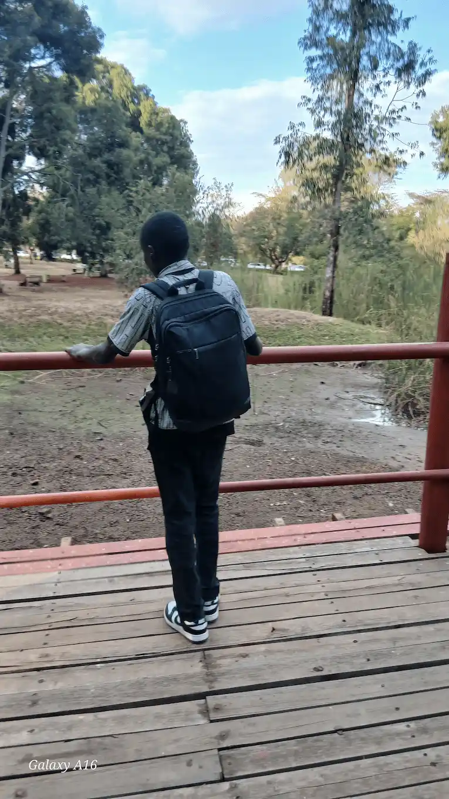

Bradley Ochieng | WDD 130

Hello my name is Bradley Ochieng and I bring that same deep curiosity and bright energy into my everyday life. I love exploring new ideas, whether I am listening to music, hanging out with friends, or just daydreaming about what is ahead. People notice that I have a big heart and a natural kindness, as I always try to be fair and good to those around me. Even when life gets a bit messy or confusing, I have a quiet strength that keeps me moving forward, eager to learn and see what the world has to offer next.
I have currently taken on a journey of coding where I am being taught how to build websites and design them. I am really looking forward to the end of this journey as I foresee myself building my own websites in the near future.